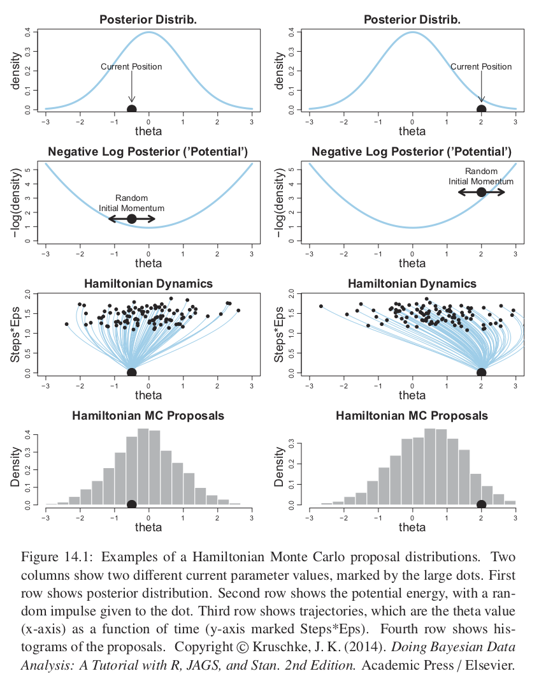
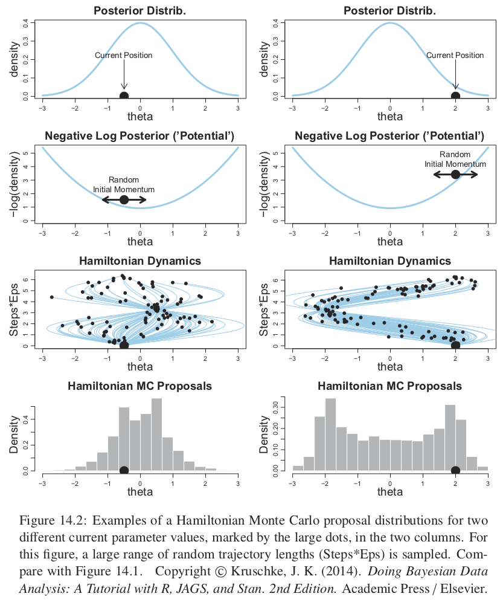
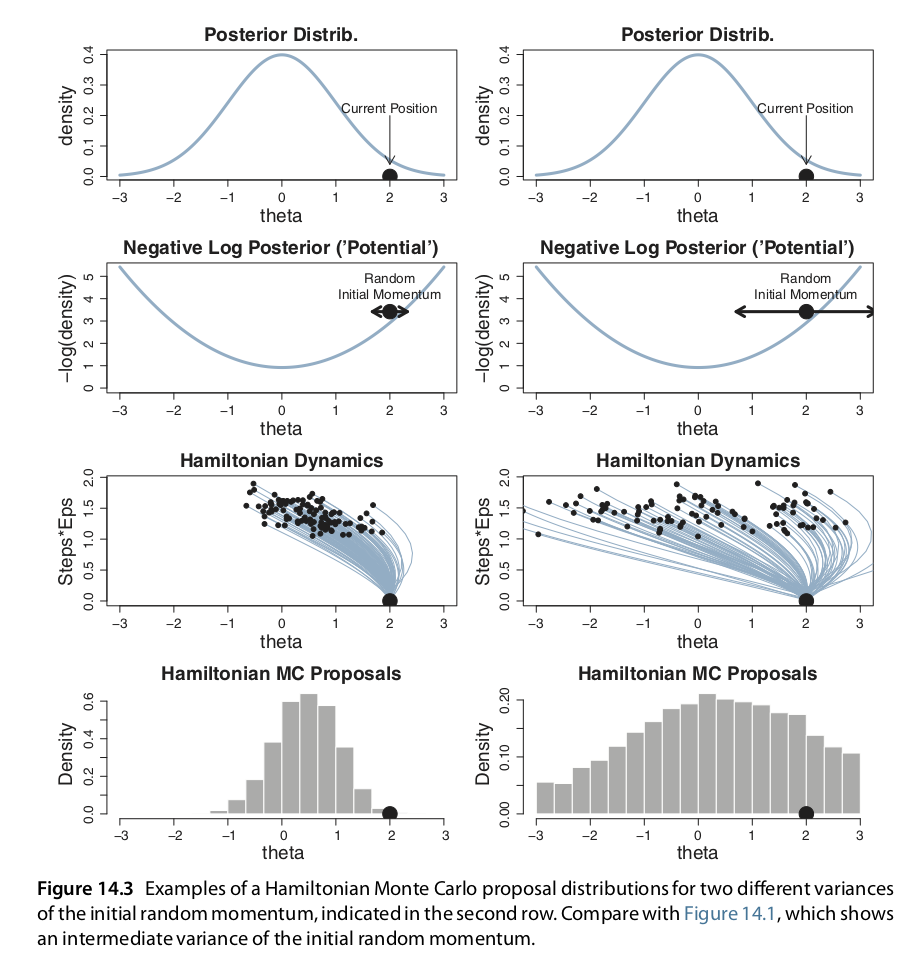

10.10 HMC y Stan
Stan es un programa para generar muestras de una distribución posterior de los parámetros de un modelo, el nombre del programa hace referencia a Stanislaw Ulam (1904-1984) que fue pionero en los métodos de Monte Carlo. A diferencia de JAGS y BUGS, los pasos de la cadena de Markov se generan con un método llamado Monte Carlo Hamiltoniano (HMC). HMC puede ser más eficiente que otros muestreadores en JAGS y BUGS, en particular cuando se ajustan modelos grandes y complejos (por ejemplo, con variables con correlación alta).
Muestreo HMC
El uso de HMC en estadística es reciente, sin embargo, gracias a Stan se ha expandido rápidamente tanto en academia como industria. Desafortunadamente, la teoría de HMC está desarrollada en términos de geometría diferencial, lo que hace que su construcción formal requiera de matemáticas avanzadas. En estas notas se presentan las ideas detrás de HMC siguiendo Kruschke (2015).
Stan genera muestras de la posterior usando una variación del algoritmo de Metrópolis. Recordemos como funciona el algoritmo de Metrópolis que vimos en clase:
Tenemos una distribución objetivo \(p(\theta)\) de la cual buscamos generar muestras. Debemos ser capaces de calcular el valor de \(p(\theta)\) para cualquier valor candidato \(\theta\). La distribución objetivo \(p(\theta)\) no tiene que estar normalizada, típicamente \(p(\theta)\) es la distribución posterior de \(\theta\) no normalizada, es decir, es el producto de la verosimilitud y la inicial.
- La muestra de la distribución objetivo se genera mediante una caminata
aleatoria a través del espacio de parámetros.
- La caminata inicia en un lugar arbitrario (definido por el usuario). El punto inicial debe ser tal que \(p(\theta)>0\).
- La caminata avanza en cada tiempo proponiendo un movimiento a una nueva posición y después decidiendo si se acepta o no el valor propuesto. Las distribuciones propuesta pueden tener muchas formas, el objetivo es que la distribución propuesta explore el espacio de parámetros de manera eficiente.
Una vez que tenemos un valor propuesto decidimos si aceptar calculando:
\[p_{mover}=min\bigg( \frac{p(\theta_{propuesta})}{p(\theta_{actual})},1\bigg)\]
Y al final obtenemos valores representativos de la distribución objetivo \(\{\theta_1,...,\theta_n\}\).
Notemos que en la versión de Metrópolis que estudiamos, la forma de la distribución propuesta está centrada de manera simétrica en la posición actual. Es decir, en un espacio paramétrico multidimensional, la distribución propuesta podría ser una Normal multivariada, con la matriz de varianzas y covarianzas seleccionada para mejorar la eficiencia en la aplicación particular. La normal multivariada siempre esta centrada en la posición actual y siempre tiene la misma forma, sin importar en que sección del espacio paramétrico estemos ubicados. Esto puede llevar a ineficiencias, por ejemplo, si nos ubicamos en las colas de la distribución posterior el paso propuesto con la misma probabilidad nos aleja o acerca de la moda de la posterior. Otro ejemplo es si la distriución posterior se curva a lo largo del espacio paramétrico, una distribución propuesta (de forma fija) puede ser eficiente para una parte de la posterior y poco eficiente para otra parte de la misma.
Por su parte HMC, usa una distribución propuesta que cambia dependiendo de la posición actual. HMC utiliza el gradiente de la posterior y envuelve la distribución propuesta hacia el gradiente, como se ve en la siguiente figura.
knitr::include_graphics("imagenes/hmc_proposals.png")
HMC genera un movimiento propuesta de manera análoga a rodar una canica en la distribución posterior volteada (también conocida como potencial). El potencial es el negativo del logaritmo de la densidad posterior, en las regiones donde la posterior es alta el potencial es bajo, y en las la regiones donde la posterior es plana el potencial es alto.
La propuesta se genera dando un golpecito la canica en una dirección aleatoria y dejándola rodar cierto tiempo. En el caso del ejemplo de un solo parámetro la dirección del golpecito inicial es hacia la izquierda o derecha, y la magnitud se genera de manera aleatoria muestreando de una distrubución Gaussiana de media cero. El golpecito impone un momento inicial a la canica, y al terminar el tiempo se propone al algoritmo de Metrópilis la posición final de la canica. Es fácil imaginar que la posición propuesta tenderá a estar en regiones de mayor probabilidad posterior.
La última fila de la figura de arriba nos muestra un histograma de los pasos propuestos, notemos que no está centrado en la posición actual sino que hay una inclinación hacia la moda de la posterior.
Para distribuciones posteriores de dimensión alta con valles diagonales o curveados, la dinámica de HMC generará valores propuesta mucho más prometedores que una distribución propuesta simétrica (como la versión de Metrópolis que implementamos) y mejores que un muestreador de Gibbs que puede atorarse en paredes diagonales.
Es así que para pasar del algoritmo de Metrópolis que estudiamos a HMC se modifica la probabilidad de aceptación para tener en cuenta no sola la denisdad posterior relativa, sino también el momento (denotado por \(\phi\)) en las posiciones actual y propuesta.
\[p_{aceptar}=\bigg(\frac{p(\theta_{propuesta}|x)p(\phi_{propuesta})}{p(\theta_{actual}|x)p(\phi_{actual})}, 1 \bigg)\]
En un sistema continuo ideal la suma de la energía potencial y cinética (que corresponden a \(-log(p(\theta|x))\) y \(-log(p(\phi))\)) es constante y por tanto aceptaríamos todas las propuestas. Sin embargo, en la práctica las dinámicas continuas se dicretizan a intervalos en el tiempo y los cálculos son solo aproximados conllevando a que se rechacen algunas propuestas.
Si los pasos discretizados son pequeños entonces la aproximación será buena pero se necesitarán más pasos para alejarse de una posición dada, y lo contrario si los pasos son muy grandes. Por tanto se debe ajustar el tamaño del paso (epsilon) y el número de pasos. La duración de la trayectoria es el producto del tamaño del paso y el número de pasos. Es usual buscar una tasa de aceptación alrededor del 65%, moviendo el tamaño de epsilon y compensando con el número de pasos.
Es así que el tamaño del paso controla la suavidad de la trayectoria. También es importante ajustar el número de pasos (es decir la duración del movimiento) pues no queremos alejarnos demasiado o rodar de regreso a la posición actual. La siguiente figura muestra varias trayectorias y notamos que muchas rebotan al lugar inicial.
knitr::include_graphics("imagenes/hmc_proposals_2.png")
Para evitar las ineficiencias de dar vueltas en U, Stan incorpora un algoritmo que generaliza la nación de vueltas en U a espacios de dimensión alta, y así estima cuando parar las trayectorias antes de que reboten hacia la posición inical. El algoritmo se llama No U-turn Sampler (NUTS).
Adicional a ajustar el tamaño del paso y número de pasos debemos ajustar la desviación estándar del momento inicial. Si la desviación estandar del momento es grande también lo será la desviación estándar de las propuestas. Nuevamente, lo más eficiente será una desviación estándar ni muy grande ni muy chica. En Stan la desviación estándar del momento se establece de manera adaptativa para que coincida con la desviación estándar de la posterior.
knitr::include_graphics("imagenes/hmc_proposals_3.png")
Por último, para calcular la trayectoria propuesta debemos ser capaces de calcular el gradiente de la densidad posterior en cualquier valor de los parámetros. Para realizar esto de manera eficiente en espacios de dimensión alta se debe derivar analíticamente, en el caso de modelos complejos las fórmulas se derivan usando algoritmos avanzados.
El paper A Conceptual Introduction to Hamiltonian Monte Carlo de Michael Betancourt explica conceptos e intuición detrás de HMC, y el porqué es apropiado en problemas de alta dimensión.
Stan
Para instalar Stan sigue las instrucciones de aquí.
Nosotros usaremos el paquete rstan y comenzamos con el ejemplo sencillo de
estimar el sesgo de una moneda.
library(rstan)
# opcional para correr en paralelo
rstan_options(auto_write = TRUE)
options(mc.cores = parallel::detectCores())Al igual que en JAGS comenzamos especificando el modelo en el lenguaje de Stan. Lo podemos guardar en un archivo de texto o simplemente asignarlo a una variable en R.
modelo.stan <-
'
data {
int<lower=0> N;
int y[N];
}
parameters {
real<lower=0,upper=1> theta;
}
model {
theta ~ beta(1,1) ;
y ~ bernoulli(theta) ;
}
'
# notemos que los modelos de Stan deben terminar con una línea en blanco
cat(file = "modelo.stan", modelo.stan)A diferencia de JAGS, Stan permite operaciones vectorizadas, por lo que podemos poner:
y ~ bernoulli(theta) ;sin necesidad de hacer el ciclo for:
for ( i in 1:N ) {
y[i] ~ dbern(theta)
}Ya que especificamos el modelo lo siguiente es traducir el modelo a código de C++ y compilarlo.
stan_cpp <- stan_model("modelo.stan")
stan_cpp <- stan_model(model_code = modelo.stan)En el paso de compilación Stan está calculando los gradientes para las dinámicas Hamiltonianas.
Ahora cargamos los datos.
N = 50 ; z = 10 ; y = c(rep(1, z), rep(0, N - z))
data_list <- list(y = y, N = N )
stan_fit <- sampling(object= stan_cpp, data = data_list,
chains = 3 , iter = 1000 , warmup = 200, thin = 1 )
summary_stan_fit <- summary(stan_fit)summary_stan_fit$summary
#> mean se_mean sd 2.5% 25% 50% 75% 97.5% n_eff
#> theta 0.213 0.00204 0.0575 0.113 0.173 0.209 0.25 0.334 791
#> lp__ -27.354 0.02388 0.7318 -29.327 -27.529 -27.068 -26.89 -26.832 939
#> Rhat
#> theta 1.01
#> lp__ 1.01Otro camino es compilar y correr las cadenas de manera simultanea con la función
stan().
stan_fit_2 <- stan(file = 'modelo.stan', data = data_list,
iter = 1000, chains = 4)Iniciales
Las siguientes recomendaciones de iniciales son de los desarrolladores de Stan, puedes leer más en https://github.com/stan-dev/stan/wiki/Prior-Choice-Recommendations.
Podemos clasificar las iniciales en 5 niveles de acuerdo a que tan informativas son:
- Iniciales planas: usualmente impropias.
- Muy vagas pero propias: \(N(0, (1e6) ^ 2)\).
- Iniciales genéricas muy debilmente informativas: \(Normal(0, 10^2)\).
- Iniciales genéricas debilmente informativas: \(Normal(0, 1)\).
- Iniciales específicas e informativas: \(Normal(0.4, 0.2^2)\)
Cuando se usa Stan tenemos los siguientes principios generales:
En Stan no importa usar conjugadas (cuando se usan muestreadores de Gibbs puede ser conveniente usar conjugadas, aquí no).
No interesan: invarianza, Jeffreys o entropía.
Las iniciales debilmente informativas deben contener suficiente información para regularizar: las iniciales deben dejar fuera valores de los parámetros que no sean razonables, pero no dejar fuera valores que podrían tener sentido.
Se prefieren las iniciales debilmente informativas sobre las informativas, esto es porque las consecuencias de perder precisión por elegir una inicial muy débil (comparado con la verdadera distribución poblacional de los parámetros o comparado con conocimiento experto) es menos importante que la ganancia en robustez que se deriva de incluir parte del espacio paramétrico que pueda ser relevante.
Cuando se usen distribuciones iniciales informativas se debe ser explícito en porque se tomaron las decisiones.
Recursos adicionales de Stan
El paquete rstanarm facilita el uso de Stan desde R, cuenta con funciones para llevar a cabo estimación Bayesiana sin necesidad de escribir código en el lenguaje de Stan, de acuerdo a los autoresel objetivo del paquete es que la estimación bayesiana sea rutina para los modelos de regresión más comunes.
El paquete bayesplot cuenta con funciones para graficar estimaciones de los parámetros, realizar diagnósticos visuales de las cadenas (convergencia), y analizar el ajuste del modelo (graficando de la predictiva posterior).
El paquete shinystan contiene resumenes gráficos y numéricos de parámetros de un modelo y de diagnósticos de convergencia.
Referencias
Kruschke, John. 2015. Doing Bayesian Data Analysis (Second Edition). Boston: Academic Press.